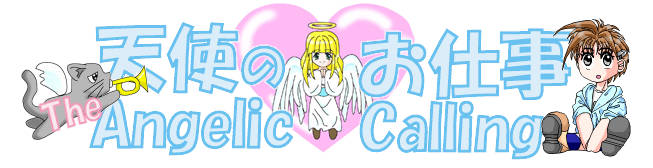

[戻る]
「天使のお仕事 第１２話」
「おーい、伊織〜ぃ。」
登校し、朝のＨＲまで、後５分。
カバンの中身を机に移し終えたばかりの伊織に声をかけてきたのは、瑞樹だった。
「あれ、瑞樹、どうかしたの？」
教室についたばかりで、まだ髪留めは外していない。
なにせ、まだ、頭が完全に目覚めきっていない時間なのだ。
不意に話しかけられたはずみに、反射的に、男としての対応をとってしまいかねない。
伊織が、髪留めを外すのは、朝のＨＲが終わった後、１時限目が始まる直前だ。
髪留めを付けっぱなしだったおかげで、伊織の返答は、ごく普通の少女のモノだったが、それを気にするような瑞樹でもない。
「なあ伊織、英語の宿題済ませてるよな？」
瑞樹の不意の問いかけに、一瞬の間の後、伊織は、小さく頷いた。
実を言えば、この状況に陥って以来、伊織の宿題および予習の達成率は、ほぼ１００パーセントといってもよい。
女の子になった・・・ということより、生活環境の変化・・・更に正確にいうとしたら、真織の存在が大きい。
世話好きで、寂しがり屋な真織にしてみれば、同居している同世代の女の子・・・厳密には、ちょっと女の子らしさに欠けるところがあったり、逆に妙に初ですれていないところがある分、妹のような存在である伊織は、世話の焼きがいのある存在でもあった。
「ねー、伊織ちゃん、一緒に宿題やろ。」
夕食までの僅かな時間、あるいは、その後、決まって、真織は、伊織に声をかけてくる。
伊織にしてみても、一緒にやれば、手間暇も半分で済むし、なにより、真織と同じ時間を共有できることは、それだけで嬉しい。
さらには、願っても見なかった、素晴らしくもトンデモナイ副産物まで待っていた。
「あ、伊織ちゃん、そこはね・・・」
伊織の手元のＮＯＴＥを覗きこもうとすれば、必然的に、真織の顔は、伊織の顔のすぐそばを掠めていく。というか、その位置で固定される。
イヤでも、感じてしまう真織の存在感・・・その吐息、体温、そして彼女の匂い・・・
自分の身体も女の子になっているから、男だったときほど、興奮はないものの、その感触そのものをないものにはできない。
幸いにも、この時には、髪留めをつけているから、勉強どころではなくなっていることこそないものの、後から、髪留めを外して反芻するには、この状況はかなり美味しいというか、美味しすぎる。
最初の時は、髪留めを外した途端、蘇ってくる記憶に鼻血を噴き出したほどだ。
実益２割下心８割と言うところで、伊織は、真織との勉学に勤しむ毎日を送っていた。
「えっと、やってあるけど。」
「悪い、ちょっと写させてくれよ。昨日、ちょっとビデオみてたら、宿題のことすっかり忘れちまってさあ・・・」
そういえば、瑞樹の瞳は、いつもより充血しているように見える。
瑞樹にこの手のことを頼まれたのも、これが初めてでもないのだ。
普段なら（後が怖いから）二つ返事でＯＫするところなのだが、今朝の伊織は、その脳裏に呼びかけてくる何かに気づいた。
これは、パラレルの声というわけではない。
もし、そうだったとしたら、この後の展開は、おのずと変わってきたことだろう。
この時の伊織に脳裏に飛来したもの。
それは、髪留めの力によって、変化した女の子としての発想・・・それが呼びかけてきた・・・どこかいたずらっぽい、いや、むしろ人が悪いといってもいいような、本来の伊織なら、思いつきもしない・・・思いついても実行に移すはずもないような、小悪魔的な思いつきというべきものだった。
むろん、髪留めの効果があろうがなかろうが、この、むしろ悪ふざけに該当する提案が、あのような結果を招くことになろうとは、今の伊織が気づくはずもなかったのだが。
「んん・・・いいけど、かわりに、ちょっとお願いがあるけど、いいかな・・・」
「え、お願い？・・・か・・・」
伊織の意外といえば意外な返答に、一瞬、瑞樹は考え込んだ。
だが、伊織のお願いといっても、そんな無茶なものはない。たかが知れてる。という憶測のもと、瑞樹は、その提案を了承した。
実際、伊織のお願いそのものは、決して無茶なものではなかった。
少なくとも、普通の女の子にとっては・・・なのだが・・・

第１２話
「瑞樹は瑞樹（前編）」
原作 １００万Ｈｉｔ記念作品製作委員会
第１２話担当：
ことぶきひかる＆ＮＤＣセキュリティサービス
「え、瑞樹って、スカート何にも持ってないの？」
クローゼットの扉を開けて一声。
伊織の声は、驚きと失望に満ちあふれていた。
クローゼットも、タンスの中も、ボトムで、つるされているものは、全てパンツ系ばかり。
スカートといえるものは、制服くらいものだ。
整理ボックスや引き出しを開けるだけ開けて、見つかったのは、明らかにサイズの合わない、かなり過去のものと、デニムのタイトミニが２枚ほど。
普段は、あんなとはいえ、なにかあったときのために、もう少し何かあるのではないかと踏んでいた伊織の計画は、早くも頓挫の危機を迎えていた。
宿題のかわりに、伊織が瑞樹に提示した条件・・・
それは、如何にも女の子女の子した・・・カマトトブリッコといってもいいくらい可愛い服装で、商店街を一周してくるということだった。
思いついた伊織でさえ、後になってから、これは、瑞樹がうんというはずもないかなと想ったほど、やや強引な提案だったが、意外なほど、呆気なく、瑞樹は、了承した。
にしても、まさか、こんな光景がまっていようとは・・・
普段は着ないにしても、普通、可愛いと言えるような服の１つや２つもってはいそうなものなのに・・・
男としての失望感と、女としての不憫な想いが、同時に、伊織の心に去来する。
今の自分の服が使えればいいのだが、なにせ、瑞樹と女の子としての伊織とでは、サイズがやや異なる。
Ｔシャツやタンクトップ程度ならともかく、今回のような目的では、なんでもいいというわけにはいかないのだ。
今更ながらに想えば、瑞樹の呆気ないほどの了承は、自分がそんな服もっていないから大丈夫という、半ば開き直りといえる状況からの回答だったのかも知れない。
とはいえ、伊織としては、この絶好の機会を逃すわけにはいかなかった。
可愛い格好をする・・・ということは、実は、この後に待っている、本戦のための前振りにすぎない。
そのためにも、瑞樹には、是が非でも、ぶりっこなくらい可愛い服を着てもらう必要があるのだ。
こうなったら、自分が真織の服で、なんとか、瑞樹にあいそうなものを・・・と思い出した頃
「あ、捜せば、あることはあるじゃない。」
「え」
片隅、他の衣装に隠されるように吊されていた・・・いや、されるようにではなく、隠されていた可能性が大きい。
淡い水色・・・雲一つない青空・・・それが地平線の彼方まで伸びていくうちに次第に霞んでいく・・・そんな淡い色彩のワンピースが、タンスのすみに、他の衣装に覆われるようにつるされていた。
「そ、それは・・・」
伊織がタンスの奥から引き出したそれを見た瑞樹の表情が凍りつく。
それは、つい２ヶ月ほど前、叔母に買ってもらった・・・というか、無理矢理プレゼントされてしまった一品だった。
叔母といっても、瑞樹の母親が長女であることも手伝って、まだ２０代。瑞樹にとっては、少し歳の離れたお姉さんといった存在であり、事実、瑞樹が頭の上がらない数少ない人物の１人だ。
もっとも、おしめをかえ、幼稚園の送り迎えをし、小学校の宿題の世話までしてもらっては、頭が上がるほどの隙間もあるはずもなかろうが。
一方で、叔母の方も、自分が末っ子ということもあり、血をわけた姪御である瑞樹は、やはり妹同然の存在だったらしい。
というか、彼女としては、瑞樹を、徹底的なまでに、妹扱いして可愛がり倒す腹づもりのようだ。
自分がまだ子供だった頃に果たせなかったお姉さん願望を、姪御ながらも、比較的歳の近い瑞樹で、達成させようということらしい。
他の人間なら、一蹴する瑞樹だが、やはり、自分のおしめを換えてくれた相手では、分が悪いらしい。
というか、その叔母自体、瑞樹の扱いに長けているらしく、瑞樹は、どうにも、逆らうことができない。
厳密に言うのなら、瑞樹自身、叔母に逆らえないよう、マインドコントＯールされているといったところか。
その日も、
「買い物、つきあって。」
の一言と一緒に、今年の夏物の買い出しに引っ張られてしまったのだ。
だが、彼女が、自分のものを物色したのは最初の３０分ほど。
「ねーねー。瑞樹なら、こういうの似合うんじゃないの。」
巧みかつ有無を言わせぬ言い回しに、なし崩しといってもいいままに、瑞樹は、いつのまにか、水色のワンピースを手に試着室へと押し込まれることになった。
「とほほ、ねーちゃん、もしかして、こっちの方が目的で、あたし、誘ったんじゃないの・・・」
その推測は、あながち外れたものでもなかった。
とはいえ、試着室にまで押し込まれては、もはや、袖を通さない限り外には出してもらえないことは分かり切っていた。
叔母の性格は、自分のことのようにわかっているだけに、渋々、着ていたカットソーとジーンズを脱ぎ始める瑞樹。
下着姿になったところで、改めて、ワンピースに目をやる。
水着などを除けば、トップとボトムに別れていない服を身につけるのは、何年ぶりのことだろうか。
手に持っているこの間にも、スカートの裾が、ヒラヒラと揺れる。
（あたしなんかじゃなくて、可愛いコが着れば、ちゃんと可愛くみえるはずなのに・・・）
自分みたいなコが着ても、女装とまではいかなくても、まるで仮装。
大人が子供服を着るような無理がそこに生じることだろう。
妹みたいな存在である女の子に、可愛い格好をさせてみたいという叔母の心情も分からないではないものの、もう少し素材の立場を、理解して欲しいと想わないではいられない。
だが、少なくとも、きちんと着たところをみせないことには、叔母は納得しないだろう。
意を決して、裾から、すっぽりと、ワンピースをかぶるようにして着込む。
幸いと言うべきか、開いた背中をホックで留めるタイプだったから、ポニーテールが引っかかることこそなかったものの、今度は、そのホックを留めるのに、散々手こずることになった。
軽い悪戦苦闘の末、どうにか、ホックを留めおえた瑞樹の目は、半ば無意識のうちに、試着室の壁に据え付けられた鏡へと向いていた。
普段、どれだけ男勝りであっても、あれだけ着るのをいやがっていたとしても、やはり、そこは女の子。
自分の今の格好がどんなものなのか、似合う似合わないは別にしても、可愛い服を着た自分を見てみたいという欲求に勝つのは難しい。
（あ）
鏡を一瞥したその瞬間、羞恥心が膨張した。
鏡に映っていたのは、ワンピースを着た少女の姿・・・
踝近くまで延びたロングスカートとはいえ、淡い色彩のそのワンピースは、デザインも相まって、清涼感に溢れるものだった。
袖口から延びる腕も、裾から僅かに覗く足首も、きゅっと引き締まり、このワンピースに相応しい、清楚な雰囲気を醸し出している。
同性であっても・・・いや、同性だからこそ、憧れてしまいそうな、その少女の存在・・・
だが、首から上は、紛れもなく自分の顔・・・
似合っているかいないか以前に、自分がこんな格好をしていること自体に耐えきれなくなる。
「ね、姉ちゃん、や、やっぱ、これって恥ずかしいよ。」
試着室のカーテンから頭だけ出して、瑞樹は、叔母に声をかける。
普段から、なにかにつけ、男の子みたいな・・・そうでなくてもラフな格好ばかりで、スカートなんて、制服以外では、ほとんど身につけたことのない瑞樹にとって、この格好は、精神的拷問に等しい。
そうしている間にも、叔母は、早速、カーテンの隙間に手を差し込んできた。
「あ、ねーちゃん」
高校に入ってからは、制服以外にスカートをはくことはほとんどなくなっていた瑞樹だけに、こんなヒラヒラなワンピース姿には、徹底的が３つつくくらい、恥ずかしさを感じずにはいられない。
「ふうん、どれどれ・・・」
瑞樹を押し込むようにして、自分もまた試着室に入る叔母。
「あ、だめだって、ねーちゃん！」
「なにいってんの・・・おしめまで変えて貰ってたくせに、今更・・・って・・・」
押し問答になるより早く叔母は、試着室に足を踏み入れた。
あまりの早技兼力技に、瑞樹は、身体を隠そうとする間さえ与えられなかった。
唖然と立ちつくす瑞樹を、叔母は、なめ回すように、上から下へとじっくりと見つめる。
「ふ〜ん、似合ってるじゃない。うん可愛い可愛い。流石、あたしの姪っ子だけのことはあるね。」
満足そうに頷く叔母。
その表情は、まさに、着せ替え人形で楽しんでいるそれだ。
だが、叔母の次の一言が、更に瑞樹を窮地へと追い込んだ。
「あ、すみません。これ、着ていきますから、支払いお願いします。」
試着室から、出るなり店員にそう告げる叔母。
「え、ねーちゃん、着ていくって・・・」
試着する直前に、値段には目を通しているのだが、瑞樹にしてみれば、あくまでも、試着だけ・・・と想いたくなるような数字が書かれていた。
「あ、気にしないで、あたしのプレゼントだから。去年は、誕生プレゼントもできなかったから、その代わり。」
フリーライターである叔母は、独身であることも手伝って、ある時には、懐はかなり裕福だ。
もっとも、その分、ない時は、かなりないわけで、そんな時は、もっぱら、瑞樹の家に、遊びがてら食事をねだりにやってくるのだが。
この辺のちゃっかり具合というか、図々しさに悪びれないところもまた瑞樹へと受け継がれることになる。
もっとも、瑞樹にしてみれば、値段よりも、この格好で、人目につくところを歩くということそのものに、気持ちが砕け散ってしまいそうになっていた。
「あ、そうだ。靴もそろえなきゃね。」
今日の叔母は、完膚無きまでに、瑞樹を着せ替え人形にして楽しむつもりらしい。
結局、同フロアにあるショップで、ストラップ付きのサンダルを購入することになってしまった。
厚底でもなければ、特に踵が高いわけでもない、比較的ありふれたデザインのモノだったが、こんな格好をしたのはいつのことだったか、ガンバって思い出さないと、蘇ってはこない・・・というか、ようやく思い出したそれは、小学校のころのことだった。
その日は、家に帰るまでの行程が長かったこと長かったこと。
だが、帰ってから、瑞樹が、このワンピースに袖を通すことは２度となかった。
なにより、恥ずかしかった。
親にさえ相談できないようなことも話せる叔母相手でさえ、あれほど恥ずかしかったのだ。
こんな格好、とても、人に見られたくはない。
（ねーちゃんには悪いけど・・・あたしには、こんな服、似合うはずもないし・・・）
せめて、こんな時くらい可愛い子ブリッこできるだけの要領の良さがあれば・・・
そう想いこそすれ、それを実行を移せそうにもない。
とはいえ、そこは、やはり女の子。
袋に入れたままにして、変な皺や折り目がつくのはイヤで、それでもハンガーに吊して、タンスの隅へと押しやった。
だが、これが、失敗だった。
着ないと言うことは、同時に、その服に触れないと言うことであり、隠すなりしまうなりという行為に繋がらないと言うことでもあるのだ。
事実、瑞樹は、こんな服、もう着たくもないという想いが募るあまり、勢い余って、このワンピースの存在そのものを忘れてしまっていた。
もし、気づいていれば、こうも容易く伊織の目に、このワンピースが触れることもなかっただろうに。
だが、既に時遅し。
どうやら、伊織にとって、このワンピースは計画実行の許容範囲どころか、充分合格点だったらしい。
ハンガーからおろしたワンピースを両手にとると、伊織は、もはや表情の凍り付いた瑞樹へと振り向いた。
「瑞樹、これ着てもらうよお。約束だからねえ。」
にこりと微笑む伊織のその顔が、瑞樹には悪魔に見えた。
「うう・・・まさか、伊織に、こんなことをされることになるとは・・・」
「グチグチいうのは、瑞樹には、似合わないぞ。ささ、さっさと、着替える着替える。」
瑞樹の性格上、どんなに嫌なことでも、約束をやぶることは、ありえないことを、伊織はよ〜く知っている。
だからこそ、あれだけ、ゴリ押しマイペースな性格にも関わらず、友人が多いのだ。（もっとも、これを腐れ縁とか悪縁とかもいうのだが。）
「分かったよ。着るって着るって。」
まだどこか納得しきれない口調で応えながら、瑞樹は、服を脱ぎ始めた。
髪留めをつけているとはいえ、瑞樹の景気のいい脱ぎっぷりに、想わず、伊織の胸は高鳴った。
瑞樹自身も、伊織が本当は幼なじみの男の子であることを知っているはずなのに、この脱ぎっぷりの良さは、なんなのか。
男女に関わりなく、本来の伊織そのものが、男性として見られていなかったという可能性もあるが・・・
「うわ・・・」
ヌード寸前の瑞樹の下着姿に、伊織は呆気にとられたような呟きを漏らした。
だが、もはや、下着姿そのものに驚いたり照れたりしている段階ではなかった。
伊織が、声を漏らしたその原因は、瑞樹のスタイルにあった。
思い起こせば、水着とか、瑞樹の半裸シーンをみたことがないわけでもないが、こうしてじっくりと、その様を見たのは初めての気がする。
女の子にしては、あまりにも飾り気やオシャレ気もなさすぎるその服装の下から、現れたのは、まるで彫刻か絵画を想わせるような、スレンダーな肢体だった。
それも、食事制限や下剤などで、強引に造り上げた、どこか不健康な、不自然さの伴う細さではない。
応援団の練習で、連日、長袖ガクラン・・・それも、夏なら炎天下での練習の結果、充分な運動の成果として作り出された健康的な細さだ。
胸や腰にこそ、ボリューム不足の感はあるが、全体的なバランスは悪くない。
いや、グラマラスさに欠ける分、ある意味、ファッションモデル（水着系除く）向きのスタイルといえるかも知れない。
（瑞樹って、こんなにスタイル良かったんだ・・・）
それまで、瑞樹を、女の子という以前に、（女の子どころか人間としても凶暴な）幼なじみという存在でしか認識していなかった伊織にとって、彼女のこのスタイルを目の当たりにしたことによる衝撃は決して小さなものではなかった。
瑞樹を女の子として意識したことが、流石に髪留めの効果を越えて、彼女のこんな格好をみてしまったことへの罪悪感というか、ばつの悪さとなって、伊織の心を責め立てる。
瑞樹のスタイルに呆気にとられる伊織だったが、伊織は、その沈黙を、無言の催促として捉えたらしい。
「とほほ、こんなことなら、もっと見つからない場所にしまっておくんだった。」
後悔先に立たずとはまさにこのことだが、例え、その場の状況に流された結果とはいえ、瑞樹に約束を破るような気は、全くなかった。
例え、ダマされたことだとしても、約束は守るのが彼女のポリシーであり、アイデンティティだ。
ハンガーから外したワンピースを頭からすっぽりと被る。
かなり不慣れな手つきで、背中のボタンをはめようとする瑞樹に、伊織はやむなく手を貸し、ボタンをとめていった。
「ほら、着たぞ。これでいいんだろ。」
ようやく着替えを終え、両手を腰にあて、胸を張るようにして、応える瑞樹。
清涼感溢れるその清楚な服装に対し、その言動は、あまりにもそぐわないものだった。
今の自分の格好に対する照れを誤魔化そうする意図もあったのかもしれない。
「よし、じゃあ今度は、髪をいじらなきゃね。」
「お、おい、まだ、なにかやらせる気かよ・・・」
「だって、この服に、ポニーテールじゃちょっと似合わないじゃない。折角なんだしさ・・・」
といったものの、再び、伊織は、窮することになってしまった。
この部屋には、鏡らしい鏡がないのだ。
姿見はおろか、まともな鏡さえロクにない。
「みずき〜、いつも、どこで、髪梳かしてるの？」
「髪・・・ん〜洗面所。」
ようやく見つけたクローゼットの扉の内側についていた鏡は、すっかり埃にまみれて曇っていた。
「しょうがない。これでやるか。」
テッシュで、鏡の汚れを拭き取ると、机から引っ張ってきた椅子に瑞樹を座らせる。
渋々ながら、鏡の前に腰掛ける瑞樹。
「こんな可愛いワンピースに、ポニーテールじゃちょっとね。」
そう呟きながら、伊織は、瑞樹の髪を留めていた輪ゴムを外した。
ふさ、しゃわわわ・・・
風が、新緑の木立をすり抜けていくときにも似た耳障りのよい音をたてながら、戒めから解き放たれた髪は、滝のように、瑞樹の背中へと流れ落ちる。
「やっぱり、こういう服装に似合うのは、ロングのストレートだよね。」
早速、伊織は、髪にブラシを通し始めた。
よほど、クセのない髪質なのだろう。
ポニーテールにしていた時の僅かなクセは、数度、櫛を通しただけで、流れ落ちるような直毛へと戻る。
「瑞樹って、ほんと、髪、キレイだよね。」
髪留めによる女の子としての意識が、イヤでも、その存在への羨望と嫉妬の感情を、滾らせる。
このご時世では、その辺の男子に長さで負けるような、ショートヘアでクセっ毛な伊織にとっては、羨ましい気持ちがわき上がってくることも無理はない。
もっとも、今の伊織の身体自体、シードの力によって変身させられたものだけに、伊織自身がシードを使いこなせれば、自由自在とまではいかなくても、ある程度、その容姿を換えることも可能なはずなのだが、今の伊織には、そこまでの力はない。
瑞樹の髪に羨望を覚える分、その艶やかな髪にブラシを通すこと行為自体に、エクスタシーにも似た歓喜を覚えてしまう。
先ほどまでは、ある意味無造作、悪く言えば、おおざっぱにポニーテールにまとめられていた髪が、次第に、サラサラのロングに相応しい髪型へと変わっていく。
「けど、瑞樹も、こんな綺麗な髪なんだから、もう少し、髪型も工夫すればいいのに。毎日、ポニーテールじゃ勿体ないよ。」
女の子としての羨望が半分、男の子兼幼なじみとしての助言が半分の口調で、伊織は呟いた。
「母さんがうるさいんだ。せめて、髪ぐらい伸ばして、外見くらい女の子らしくしてちょーだいって。泣きつかれたら、もう切るわけにもいかないだろ。」
瑞樹の答えに、伊織は苦笑するしかなかった。
確かに、瑞樹のあの性格では、髪型くらいは女の子らしくして欲しいのと言うのが、親の最後の願いというところだろう。
「・・・にしても、ちゃんと、髪の手入れだけはしてるみたいじゃない。こんなにサラサラだし。」
「それも、仕方ないことなんだよ。ちゃんとトリートメントしとかないと、翌朝、髪型爆発五郎。パパイヤ鈴木になっちまうからな。そうなると、もうまとめるの大変だからな。」
「う〜ん・・・そうかあ・・・」
男としての意識は、長い髪の女の子に憧れている部分があったが、その辺の手間を考えると、なんとなく後込みしてしまうことになってしまう。
何気ない会話を交わしながら、次第に、瑞樹の髪型は、その服装に相応しいものに変わっていく。
今の自分の姿を見るのはやはり恥ずかしいのか、鏡から顔を背けていた瑞樹だったが、それでも、時折、ちらちらと、鏡へと視線を向けていた。
いい加減、髪型がまとまってきたところで、伊織は、自分の髪・・・左耳の少し上につけられた、銀色の髪留めに手を当てた。
男である自分の性格や嗜好を女の子のものに変えるこの髪留め。
これを、男みたいな性格の持ち主である瑞樹に着けてみたらどうなるのか、充分すぎるほどに、興味はあった。
パラレルに、確認したわけではないものの、これは、あくまでも、本来男である自分のような存在にしか、効力を現さないモノなのか、それとも・・・
「お、おい、伊織、それって、意識を女の子に変えるクリップだろ。あたしは、女の子なんだから、いくらなんでも、それを付けたって・・・」
瑞樹は、その言葉を最後まで続けることができなかった。
髪留めを掴む伊織の手が、瑞樹の髪をたくしあげる。
こめかみよりやや上方、前髪をあげるようにして、髪留めが付けられたその瞬間、瑞樹の中で、なにかが逆転した。
髪留めが、髪に当てられた瞬間、瑞樹の脳裏に、１人の女の子の姿が浮かび上がった、
年齢は、５，６歳・・・小学校に入ったか入らないかという頃だろうか。
ハイウエストの、フリルで飾られたレモンイエローのワンピースに、リボンの付いた麦わら帽子。
まだ小さな身体とはいえ、腰の近くまで延びた長い髪・・・
この年頃の女の子に相応しい、あどけない表情・・・
その容姿は、人形のように愛くるしい。
瑞樹には、その少女に、見覚えがあった・・・
しかし、その存在が・・・名前が思い出せない。
その顔には確かに見覚えがあるのだが・・・
それも、どこかでちらりと見たという程度ではない。
家族同然、それでなくても、近所付き合いをしてるレベルで、目にしているほどの・・・
誰だろう・・・
むしろ親しみを・・・そう親しみ、妹にようにさえ思えるその親近感。
誰だろう・・・
再び自分に問いかけるが、まるで奥歯に挟まったホウレンソウにように、その答えは引き出せない。
誰だろう・・・
その答えは、自分にとって、重大な意味を持っているはずなのに・・・
誰だろう！
我知らず瑞樹は叫んでいた。
不意に意識は現実に戻った。
視線の先には、伊織の顔・・・
直前までの記憶がなかなか蘇ってこない。
確か、伊織が自分に何かしようとして、それに対して、自分はなにか言おうとして・・・
伊織に対して、なにか言おうとした口の動きが止まる。
何を言おうとしたのか、思い出せない。
いや、なにか、言おうとしたこと、言おうとするその行為そのものが、ものすご〜くいけないことのような気がする。
それを口にしようとした自分自身が、とて〜も、恥ずかしくなってしまう。
（あ、あたし、な、何、しようとしたんだろ・・・）
それと同時に、それまで感じたことのなかった不安とか恐怖とか、そういう感情が、どっとわき上がってきた。
今の自分の置かれた状況を把握できないことが、怖くてたまらない。
誰でもいい。
今の自分がどうなったのか、自分に何が起こったのか、教えて欲しい。
必然的に、瑞樹の意識は、すぐそばにいる伊織に向けられることになった。
「ちょちょ、ちょっと、何したの。伊織ちゃん・・・え？」
不安に耐えきれず、想わず、伊織に助けを求めようと、その言葉を口にした途端、自分の発したその言葉に、瑞樹は驚きを隠せなかった。
（伊織ちゃん・・・って・・・）
自分が、伊織のことをちゃん付けで呼ぶなんて、どういうことなのだろう。
そもそも、いくら不安とはいえ「伊織」に助けを求めようとした自分の変化にすら、今の瑞樹は気づいていなかった。
（な、なな、なんで、あたし、伊織ちゃんのこと、伊織ちゃんなんて・・・って・・・え？！）
「伊織ちゃん」
まさか、自分が、伊織ちゃんのことを・・・ってやっぱり、「ちゃん」付けになってしまう。しかも、口に出す前から。
いや、むしろ、「伊織」と呼び捨てにすることの方が、不自然に想えるほどだ。
だが、一方で、驚いたのは伊織も同様だった。
「伊織ちゃん」
の一言が、伊織を驚愕させるに充分すぎる威力を持っていた。
しかし、それだけでは終わらない。
まるで、いきなり別人が目の前に現れたのではないかと想ってしまいそうなほどの変化・・・
むしろ、こうなることは半ば予想していた伊織の方が、瑞樹より遙かに驚いていた。
 「え・・・と、瑞樹・・・だよな・・・」
「え・・・と、瑞樹・・・だよな・・・」
そう呟く伊織の口調は、どこか呆然としたモノであり、自分に問いかけているのか、瑞樹に聞いているのか、はっきりとしないイントネーションになっていた。
「うん、瑞樹だよ。瑞樹にきまってるよ・・・けど、ひどいよ、伊織ちゃん・・・いきなり、あんなことするなんて・・・」
自分がされたことに怒っていると言うより、自分がおかれている状況がはっきりしないことへの不安と恐怖が入り混じったかのような瑞樹の表情と口調。
「え、あんなことって・・・」
「だって、伊織ちゃん、あたしに、いきなり髪留めをつけたりするんだもん。」
少し潤みかけた眼差しを、伊織に向ける瑞樹。
その口調は、非難すると言うより、とにかく自分を何とかして欲しいと助けを求める響きが多くを占めていた。
髪留めを外しているがために、男の意識に戻っている伊織は、想わずどきりとしてしまった。
瑞樹が、瞳を潤ませている姿を拝めるなんて、想っても見ないことだった。
事の張本人だけに、こうなることは、途中まで予測の範囲だったのだが、ここまで極端な変化として現れるとは・・・
だが、多少なりとも予測していただけに、立ち直るのも速い。
「ほら、みてみ。」
伊織は、瑞樹の肩に手を置くと、鏡の方へと向き直らせた。
薄手の布地であることも手伝って、淡い空色のワンピースは、その露出度に比べ、吹き抜ける風のように涼やかだ。
襟と袖口、裾、そしてリボンを、それとなく飾るレースが更に清涼感を強調し、今の瑞樹を、まるで、草原を吹き抜ける風の妖精のように見せていた。
額に付けられた銀色の髪留めの落ち着いた輝きが、それをより一層想像するに容易いものとさせている。
「今の瑞樹は、こ〜んなに可愛いんだから。」
「え・・・可愛い・・・」
伊織のその言葉に、瑞樹は恥じらうようにその頬に両手をあてた。
（え・・・）
今度は、伊織の方が驚く番だった。
こんなに、瑞樹が恥じらうさまをみたのは、何年ぶりのことだろう。
いや、目の当たりにしたのは初めてのことかも知れない。
あの髪留めの効果は、身をもって体験済みとはいえ、あの瑞樹が、ここまで、女の子らしい・・・いやそれさえ通り越して、最近でも、少女マンガの中でもお目にかかれそうにない、清楚な少女に変貌を遂げるとは・・・
しかも、今の瑞樹の格好は、美少女と呼んで差し支えないほど可憐なものなのだ。
髪留めがないせいで、男性の意識となっている伊織は、イヤでも、その姿の高ぶりを覚えてしまう。
（み、瑞樹が、こんな可愛いコになるなんて・・・けど、これはこれで面白いことになるかも・・・）
二人っきりの時でさえ、これほどの羞恥心暴走の様をみせているのだ。
無数の人の視線に晒される町中へいくとなれば、その羞恥心、どこまで膨れ上がってくれるか。
そして今の瑞樹はどんな反応を見せてくれるか。
初め想っていたより、遙かに面白いものが見られそうだ。
自分が女の子にされてしまった時に散々からかわれたことへの仕返しもあるし、自分が、瑞樹に対してイニシアティブをとったのは、生まれてこの方初めてといってもいい。
髪留めを外すまでの僅かな天下とはいえ、この機会を楽しまないのは、あまりにももったいなさすぎる。
「じゃ、約束通り、商店街一周してきてもらおうかな。」
誰が見ても人の悪い・・・天使と言うより小悪魔的な笑みを浮かべながら、伊織は、瑞樹に話しかける。
「え、この格好で・・・」
予想に違わず、今の瑞樹にとって、この格好で、外を出歩くなど、とんでもないことのようだ。
「それとも、瑞樹って約束を平気で破っちゃう子なのかなあ・・・」
「そ、そうじゃないけど・・・」
約束を破るという言葉に、瑞樹の表情が曇る。
義理堅く、死んでも約束は守るという部分は、おしとやかになっても健在のようだ。
「大丈夫大丈夫。商店街、ただ一周してくるだけでいいんだからさあ・・・」
だめ押しをするように、伊織は、瑞樹の肩に、ポンと手をおいた。
「ね、伊織ちゃん、どうしても、１人じゃないとダメなの？」
組んだ両手を胸元にあて、哀願するような眼差しを伊織に向ける瑞樹。
子犬か子猫か齧歯類か。
おびえる小動物を想わせるその仕草は、髪留めをしていないため、今は男としてのメンタル状態である伊織にとっては、なかなかキツいシチュエーションであるが、ここで、譲歩してしまっては、ここまでの段取りが全てぶちこわしである。
「ダメだって、約束なんだからな。」
揺らぎそうになる自分の気持ちにも喝をいれるつもりで、ちょっと強気な口調で応じる伊織。
「それより、早くいったいった。今はまだ人通り少ないけど、これから時間が経てば、もっと多くなるぞ。」
「そ、そうなんだけど・・・」
「さ、出発出発。」
伊織に背中を押されて、仕方なくという感じに、瑞樹は、歩き始めた。
ノンキな表情で、手を振りながら、それを見送る伊織。
「さて、それじゃ、いくとするか。」
瑞樹が、角を曲がったのを確かめると、誰に聞かせるとでもなく、伊織は呟いた。
商店街とはいえ、街中へと出歩いたら、今の瑞樹がどんな反応を示すのか。
これを見逃す手はない。
「やれやれ、お前も暇だなあ・・・髪留めをあんなことに使うなんて。」
先ほどから、塀の上で、二人の様子をみていたシリアルが、呆れたように呟く。
「あれ、シリアル、一緒にこないのか？」
「こんなことにつき合ってるほど、ぼくは暇じゃないよ。」
そう応えると、シリアルは、塀から屋根へと飛び移り、そのままどこかへいってしまった。
これまで、パラレルの迷案に散々つき合わされてきただけに、伊織が相手とはいえ、こんなことに振り回されたくはないらしい。
「あ、いっちまった・・・ま、今の瑞樹を追いかけるぐらい、俺１人でもいいか・・・」
行き先は、どうせ商店街。
見失う恐れはないのだ。
今の伊織の格好は、Ｔシャツに７分丈ジーンズ、そしてミュール。
夏とはいえ、女のコしては、ラフすぎるきらいもあるが、髪留めがない以上、男としての意識では、いまだ、スカートを含めた、如何にも女の子らしい格好には、絶対的な恥ずかしさが伴う。
今、こうしている間にも、身につけている下着の感触が、いやでも女装しているような気にさせるだけに、これ以上、女の子らしい格好で、外を出歩くのは拷問に等しい。
「うう・・・伊織ちゃん、ヒドいよ。あたし、こんなことイヤなのに・・・」
普段の瑞樹を知っている人間が聞いたら、腰を抜かしてしまいそうな呟き洩らしながら、瑞樹は、どこかトボトボとした足取りで、それでも律儀に、商店街に脚を向けていた。
すれ違う人たちの視線が痛い。
学校の制服ならともかく、こんなヒラヒラなワンピース姿、しかも髪までおろして・・・
いかにも、滑稽さを狙ったチンドン屋のような仮装をしているような気がして、恥ずかしくて恥ずかしくてたまらない。
無論、大多数の通行人は、それほど瑞樹へと意識も視線も向けていないし、瑞樹へと向けられている視線があるとしたら、それは、奇異なものに対するものではなく、むしろ好意的なもの・・・特に異性に関するものだ。
とはいえ、今の瑞樹が、それに気づくはずもない。
（も、もう・・・早く一周して帰っちゃおう・・・）
こうしている間にも、膨れ上がる羞恥心に、身体が破裂してしまいそうだ。
自分を奮い立たせ、なんとか、歩き始めようとしたとき、普段なら、気にもとめないショーウィンドウに目が向く。
意図的に反射率を変えた硝子の向こうに並ぶのは、キャミソールやタンキニに彩られたマネキン達だ。
（あ、可愛い・・・）
足が止まり、視線が、その向きに固定される。
いつのまにか、瑞樹の脳裏では、ショーウィンドウに並ぶ服を着た自分の姿が浮かび上がっていた。
そして、そのすぐそばには、彼女に連れ添って歩く男性の姿・・・
（あ）
そこで、瑞樹は、我に返った。
（バカみたい・・・そんな人いるわけないのに・・・）
そんな想いが心を横切り、ずきんと小さな痛みが走った。
（・・・そうだよね・・・あたしみたいな、スカートも似合わないようなコ、彼氏なんかできるはず・・・）
「よろしければ、中へどうぞ。」
不意にかけられた声に、振り向けば、そこには、このブティックの店員とおぼしき女性。
外にでてきて瑞樹に気づいたのか、それとも、瑞樹に気づいて外にでてきたのか。
どちらが正解か、それとも、３番目の答えがあるのか、分かるはずもないが、瑞樹は、ショーウィンドウに見とれていた自分が、人に見られていたという事実に、かあっと頭に血が集まってしまった。
（え、見られちゃった？見られちゃった？！）
髪留めを付けられたときから、少しずつ上昇してきた羞恥心のゲージが、一気に臨界点を突破した。
もはや、人前にいること自体、耐えきれなくなる。
「あ、い、いいです。」
恥ずかしさに耐えきれず、瑞樹は、その場から逃げるように駆けだしていた。
「ほえ〜、瑞樹のヤツ、ちゃんと女の子してるよ。あの髪留めって、とんでもない威力もってんだな。」
ショーウィンドウに見とれる瑞樹の姿に、看板の影から、こっそりと覗きながら、伊織は、驚き半分呆れ半分で呟いた。
自分自身、身をもって体験していることとはいえ、瑞樹というライオンが子猫になってしまった様を目の当たりにすると、やはり、驚愕を覚えずにはいられない。
「へっへっへ、軽い思いつきだったけど、こりゃ、面白いものが、まだまだ見られそうだな・・・カメラ、持ってこなかったの失敗だったかな？」
まだ、商店街の４分の１も来ていない。
この先、あちこちで面白いものが見れそうだ。
と、ブティックの店員が、瑞樹に声をかけるのが見えた。
と同時に、駆け出す瑞樹。
（あれ）
一瞬、自分が尾行していたことに気づかれたのではないかと想った伊織だったが、どうやら、ちょっと違うらしい。
ここで見失っては大変と、慌てて、追いかけようとする伊織。
と、ここで慌てたのが失敗だった。
足下は、ちょっと踵が高めのミュール。
髪留めをしておらず、男としての意識であることが、それを後押しした。
つんのめるようにしてバランスが崩れた。
ごつん
先ほどまで自分が隠れていた看板に、頭からつっこむ形になった。
「・・・あたたたた・・・」
額と鼻の頭をさすりながら、身体を起こす伊織。
「・・・スニーカーにしとけばよかった・・・」
中途半端にオシャレに目覚めるもんじゃないなと後悔しながら、埃を払いながら立ち上がる。
「あ、しまった。」
そうこうしている間に、瑞樹の姿は見えなくなっていた。
時間にしてみれば、１分足らずのことだったに違いない。
だが、駆けだした瑞樹を見失うには、充分すぎる時間だった。
視界の範囲には、どこにも瑞樹の姿は見いだせない。
「くそお・・・こんな時、シリアルが居てくれたら・・・パラレルに連絡・・・って、しまったあの髪留めがないと、連絡のつけようが・・・」
いつもの瑞樹だったら、例えなにかあっても、むしろ相手のことを心配しなければならないところだが、なにせ、今の瑞樹は、髪留めの力とはいえ、最近では、天然記念物並におしとやかな・・・まるで深窓の令嬢のようになってしまっているのだ。
まあ、ここは、あくまでも商店街であるだけに、それほど危険があるとは想えないが、何しろ、自分がやりだしたことだけに、多少責任を感じずにはいられないし、これからがいいところ本番という時に、姿を見失ってしまったのでは、惜しんでも惜しみきれない。
「くっそー！とにかく、まだ商店街にはいるはずだから、早く見つけないと・・・」
そばでは、伊織の言葉遣いを聞きつけた中年の婦人が、顔を顰めていた。
ブティックの店員に見られたことへの恥ずかしさに耐えきれず、瑞樹は無我夢中で走っていた。
といっても、ロングのスカートに加え、髪留めによるおしとやかなお嬢様モードによって、その速度は、早足程度であったが・・・
（やだ、あたしったら、何してたの・・・あんなところで、ぼーぉっと立っていたなんて・・・人に見られたら、何を想われるか・・・）
ショーウィンドウに見とれていた自分は、人の目には、どういう風に映っていたのだろう。
想像しただけで、顔が熱くなる。
うつむくようにして駆けていた瑞樹は、自分の前で、歩道一杯に並んで歩いていた彼らに気づかなかった。
がつん
瑞樹の肩と、前を歩いていた人物の腕がぶつかる。
「きゃ・・・あ、ご、ごめんなさい・・・」
誰かに、ぶつかってしまったことに気づき、慌てて謝罪の言葉を述べる瑞樹。
その弾みに俯いていた顔をあげた瑞樹は、凍り付いてしまった。
瑞樹がぶつかったのは、金髪茶髪に、顎髭、鼻ピアス、おまけに腕にはタトゥと、みるからにガラの悪そうな３人組だった。
（あ）
反射的に、身をすくめてしまう瑞樹。
いつもの彼女なら、謝るどころか、逆に怒鳴りつけるところなのだが、今の瑞樹には、そんなこと、想ってもみないことだった。
だが、相手のヤンキー３人組にとっては、この、どこかおどおどとした少女の存在は、かえって、その嗜虐心を刺激するものになったらしい。
「おー、痛い痛い。」
一人が、わざとらしく、瑞樹があたった腕をさする。
「あ、あの、大丈夫ですか？」
今の瑞樹には、そのわざとらしさに気づく余裕があるはずもない。
つい、言葉も対応を真剣なものになってしまう。
「う〜ん、痣くらいできてそうだな。こりゃ。」
「悪いのは、そっちなんだから、ちょっとばかり、誠意ある態度を、具体的に見せて欲しいよなあ。」
いやらしい笑みを浮かべながらヤンキー３人組は、瑞樹を見下ろした。
「せ、誠意ある対応・・・って・・・」
「そうだよなあ・・・ちょっとばかし、俺達につきあってもらうってのは、どうかなあ・・・いや、ほんの数時間のことなんだけど。」
そう脅しの言葉を呟きながら、逃がすまいとするかのように、ヤンキー達は、瑞樹を取り囲んだ。
ヤンキーに引きずられていくようにして、いつのまにか、商店街から、その路地裏へと瑞樹の位置は変化していた。
商店街のことだけに、少女がヤンキーに絡まれていることに気づいた者もいたはずなのだが、誰もが、厄介事をおそれて、助けようとはしなかった。
しかも、この路地裏では、もはや誰も気づいてはくれないだろう。
「へっへっへ、けっこう、可愛いコじゃないか。ちょっと、おとなしすぎる気もするけど。」
「バカ、こういうスレてないコの方が、最近、キチョーだろうが。」
ヤンキーは、下品な笑みを浮かべ下品な言葉を吐きながら、品定めをするようにして、嘗める様に瑞樹の身体をじっくりと見つめまわす。
「や、やめて・・・ください・・・」
今の瑞樹には、そう呟くのがやっとだった。
自分が何をされるのか、具体的には、全く分からない。
しかし、力任せに理不尽なことをされることだけは、疑いようがなかった。
今の瑞樹は、想像力だけが暴走して、何をされるのか、詳細は全く分からないにも関わらず、自分が非道いことをされるであろうことだけが、脳裏に浮かび上がり、その恐怖から、怯え震える以上の行為が何もできなくなっていた。
しかし、瑞樹の、必死の呟きも、かえって、ヤンキーの嗜虐性を高ぶらせることになってしまった。
「いいねえいいねえ。その声、その怯えよう。遊び甲斐があるってもんだ。」
舌なめずりをしながら、ヤンキーの手が、ワンピースの襟にとかかった。
本来の瑞樹なら、３人相手に大立ち回りまでは行かなくても、隙をみて、逃げ出すなり、助けを求めるなりできたはずだろう。
だが、あまりにも儚げな美少女となってしまった、今の瑞樹にできることは、瞳を閉じ、固く拳を握りしめたまま、ただ自分のみに降りかかるであろう厄災に震えるだけだ。
無理矢理、襟を引き裂かれようとするヤンキーに、瑞樹が身体を縮ませた瞬間、その声は聞こえた。
「おまわりさん。こっちです！こっち！」
不意に、叫び声が、路地裏に響いた。
駆け寄ってくる足音も聞こえる。
「チクショー！だれだ。こんないいところで・・・」
「おい、ずらからないとヤバイいぜ。」
ヤンキーたちは、足早に、その場から逃げ去っていった。
後に残されたのは瑞樹一人・・・なのだが、あまりにも早い状況の変化に、何が起こったのか、いまだよく分からない。
ただ、ヤンキー達が、逃げ去ったことで、とりあえず、当面の危機からは、脱出できたことだけは、辛うじて、理解することができた。
（あ、助かった？・・・おまわりさん、来て・・・くれたの？）
たったった、と軽い足取りが聞こえてきた。
おまわりさんが来てくれたのだろうか。
その音に、ようやく、瑞樹は、安堵することができた。
安心のあまり、涙腺が緩んだのだろうか。
不意に、目尻が熱くなる。
路地の角から、人影が飛び出してきた。
だが、その服装は、警官のモノではない。
タンクトップに、ジーンズのその姿は、高校生・・・自分と同い年くらいの・・・男子に見える。
その少年の姿に、瑞樹は見覚えがあった。
いや、見覚えどころか、それは、よおく知っている男子の姿だった。
「芹沢・・・くん？・・・」
考えるより早く声が出ていた。
「え」
不意に、自分の名前が呼ばれたことに、路地裏に入ってきたばかりの芹沢は驚きを隠しきれなかった。
女の子が、いかにもガラの悪そうな連中に、路地裏へと引っ張って行かれるところを見て、これは放ってはおけない
もちろん、「おまわりさん、こっちです。」のあの声は、連中を追い払うためのウソだ。
だが、助けた相手が、自分を知っているとは想ってもみなかったらしい。
（えーと・・・誰だっけ・・・）
懸命に、顔と名前を一致させようとする・・・が一致しない。
知っているはずなんだけど・・・
芹沢が、ようやく瑞樹の名にたどり着いたときには、約３０秒が経過していた。
「え、もしかして笹島さん？」
やはり、そこは、惚れた弱みと言うべきだろうか。
いつもとは服装も雰囲気も違う、伊織でさえも自分の目を疑った瑞樹の変化にも関わらず、どうにか、彼女が、自分の思い人であることに気づく芹沢。
本来の瑞樹なら、自分のことを気づかない相手に、皮肉に１つも言っただろうが、今の瑞樹は、ただ小さくコクンと、肯定の頷きを見せるだけだった。
「け、けど、笹島さん・・・」
なんで、そんな格好してるんだ。
そう言ってしまいそうになった芹沢は、危ういところで、その言葉を呑み込んだ。
仮にも、相手は、年頃の女の子だ。
いくら自分をふった相手とはいえ、そんな失礼な言葉を吐けるほど、芹沢は、無神経でもなかった。
「と、とにかく、無事で良かったよ・・・って怪我ないか。乱暴なこととかはされてないか？」
「う・・・うん、大丈夫・・・ありがとう。芹沢くん・・・」
（え、ありがとう・・・？・・・）
普段なら、せいぜい「サンキュー」
下手をすれば
「余計なことしやがって」
と言って返すような笹島が、あまりにも素直な感謝の言葉。
そういえば、さきほども、自分のことをくん付けで呼んでいたが、これ自体、極めて特異なことといえた。
普段の瑞樹は、同級生はもちろんのこと、場合によっては、年上の相手さえ、呼び捨てにするようなタマなのだ。
男とか女とか言う性別を気にしない瑞樹の性格ならではのことといえたが、それだけに、こんな殊勝な言葉を聞かされると、その驚きは大きい。
なんとなく、目の前にいるワンピース姿のこの少女は、瑞樹ではないのではないかという想いにとらわれそうになる。
「あ、あの・・・おまわり・・・さんは？」
「あ、あれは、ウソウソ。連中を追い払うためのデマカセ・・・けど、どうしたんだよ。笹島さん、君なら、あんな連中、片手でポイだろう・・・」
以前、応援団の練習中、それをからかった連中を、瑞樹が、ちぎっては投げちぎっては投げしている光景を目の当たりにしているだけに、たかが、ヤンキーに絡まれた程度で、怯え、そしてただ震えているこの少女が、瑞樹と同一人物だとは、どうしても納得できないところがあった。
少なくとも、こんなにおどおどした瑞樹をみたのは、初めてのことだ。
「・・・ま、しょうがないよな。笹島さんも女の子なんだし・・・」
むしろ、瑞樹の別の一面をみたことに、やはり、彼女の女の子なんだなと想えたことを、ほのかに嬉しく想いながら、芹沢は、自分に言い聞かせるように呟いた。
「女の子・・・」
芹沢の口からでたその言葉が、突然、瑞樹の心をくすぐった。
本来であれば、屈辱とまでいかなくても、女扱いされることに、軽い憤りを覚えずにいられないその言葉のはずなのに、今は、男の子に女の子としてみてもらえる。女の子として扱ってもらえる。そのことに、心に染みいるような満足感を覚えてしまう。
とりとめのない会話を交わしたおかげだろうか。
なんとなく、瑞樹の心も落ち着きを取り戻しつつあった。
と、それは同時に、今の自分の姿を、知人に見られてしまったという事実を認識する能力の回復を意味していた。
震えと怯えがおさまるにつれ、今、目の前にいる男の子に、今の自分の姿を見られていると言うことに気づく。
（あ、あたし、こんな格好、芹沢くんに・・・）
こんな、如何にも女の子女の子した格好を、男の子に見られてしまうなんて・・・
ブティックの店員に声をかけられた時以上の恥ずかしさが心を破裂させようとする。
だが、今だ、震えのおさまらないこの身体では、逃げ出すこともできなかった。
顔を朱に染めながら、ただ、小さく震えながら、立ちつくすだけの瑞樹。
一方、芹沢は、そんな瑞樹の姿に、芹沢は、自分の心が衝動的とも言える感情に駆られていることに気づいた。
薄手の淡い色彩のワンピースのせいだろうか。
目の前に立つ少女は、いつもの瑞樹・・・自分の知っている瑞樹より、遙かに儚げで弱々しく、そして華奢な雰囲気を漂わせていた。
襟から続く首とうなじ、袖から延びる腕、裾からのぞく脹ら脛と足首。
そのいずれも、きゅっと引き締まり、そこから感じさせる少女の存在感が、芹沢の心を振るわせた。
細さ・・・そして細いだけでは終わらない、微妙な・・・しかしそれだけに女性を感じさせずにはおかない起伏のライン・・・
普段の瑞樹が決して見せようとはしない、おどおどとした怯えるような仕草が、それを、更に強調させる。
ぎゅっと抱きしめたら壊れてしまいそうな・・・だからこそ、壊れるほどに力一杯抱きしめずにはいられなくなってしまいそうな、刹那にも似た衝動。
その衝動に駆られそうになる自分を、抑えようとすると、かえってそれが、瑞樹の存在をより鮮明なものとして、感じ捉えてしまうことになる。
「ま、もう大丈夫だから安心してくれよ。」
そう呟きつつ、芹沢は、瑞樹の肩に軽く手を置いた。
このままでは、マジに瑞樹を抱きしめずにはいられなくなってしまいそうな自分を抑えるための、ギリギリの折衷作だ。
肩におかれた、芹沢の手の感触に、瑞樹の身体が、ビクンと小さく震える
だが、その感触がどこかが心地よい。
瑞樹は、いきなり自分の肩に置かれた男性の手に驚きながらも、そう感じている自分にもまた驚いていた。
掌から伝わってくる力強さと暖かさが、今だ心の中から消え去らない不安や恐怖・・・そういった存在を、溶かし押し流してくれるような気がする。
自分が頼ってもいい、いっそのこと全てを委ねてしまいたくなってしまうような、そんな存在に、自分の全部を渡してしまいたくなるような・・・
肩に手を置くだけで終わらせて欲しくない。
いっそのこと、自分を抱きしめて欲しい。
無理矢理自分を奪ってしまうかのように、強く、強く、砕け散らんばかりに抱きしめて欲しい。
まるで、飢えた獣の欲望のような自分の感情に、驚きと恥ずかしさを覚えつつも、瑞樹は、その想いを抑えきることができない。
肩から伝わってくる、掌の感触に、その想いはますます強くなっていく。
いっそのこと、自分から、芹沢に抱きついてしまおうか。
はしたないという羞恥心がざわめきつつも、芹沢に自分の全てを捧げることで、自分もまた芹沢を自分のものにしてしまいという想いが、巨大な風船のように膨らんでいく。
だが、先に耐えきれなくなったのは芹沢の方だった。
「と、とにかく、もう大丈夫なんだから、後は、気をつけて帰れよ。」
これ以上、今の瑞樹と一緒にいたら、自分を抑えきれなくなる。
賢明にもそう判断した芹沢は、とにかく、この場から離れようときびすを返したその時、
「ま、まって・・・」
瑞樹のか細い・・・しかし懇願するかのような声が、芹沢の逃走進路を遮った。
「う」
想わず、芹沢の動きが止まる。
むしろ、「いくな！」と、いつもの口調で怒鳴られた方が、その怒声の勢いを帆に受けて、逃げることもできたであろう。
しかし、この縋り付くような声を聞いてしまっては、もはや男としては逃げることは不可能だ。
「お願い、行かないで・・・」
不意に、シャツが掴まれ、そして引っ張られる感触。
その行為の主が誰であるか、気づかない芹沢ではなかった。
だが、それだけに振り向くに振り向けない。
どういう顔をしたらいいか分からないし、もし自分の服を掴む瑞樹の姿をみてしまったとしたら、もう自分を抑えきれなくなる。
いろんな意味で・・・
「お願い・・・ちょっとだけでいいから・・・こうして・・・いさせて・・・」
芹沢の身体をたぐり寄せようとするかのように、彼のシャツを掴む瑞樹の手に力がこもる。
しかし、たぐり寄ってきたのは、瑞樹の身体の方だった。
シャツ越しに、微かな振動となって伝わってくる、手首そして肘が曲がる感触。
布地同士が擦れる感触。
そして、不意に、自分の背中に、なにかが圧し当てられた。
肩胛骨のぎりぎり下・・・
肉と骨の境目・・・向こう臑がそうであるように、皮膚も薄く、筋肉もぜい肉も限りなく存在しないその部位は、その層の薄さ故に、外部からの圧力と言う存在を、敏感に感じ取ってしまう部分だった。、
その部位に圧し当てられたのは柔らかい膨らみ。
決して大きくはないモノの、確かに柔らかい存在。
男には決して存在し得ない・・・だからこそ、男は、そこに、渇望にも似た想いをもってしまうのだ。
ボリュームにこそ欠けるものの、確かにそうと感じ取れる柔らかい二つの盛り上がり。
半ば、その正体に気づいていたことが、かえって、その呼称を思い浮かばせることを妨害させ躊躇わせる。
（こ、これって、お・・・お・・・おぱ・・・おっぱ・・・）
オパオパでもパオパオでもないことは確かだが、だからといって、正解を口にだすところか、心の中で思い浮かべることさえ憚られる。
もし、その言葉を、思いついた瞬間、自分の衝動を抑えている理性の鎖は、一瞬のうちに引きちぎられてしまうだろう。
（あ、暑いなあ・・・今日も・・・アイスなんか食べたいなあ・・・サーティンワンのクッキーとチョコチップなんかで・・・）
半ば必死に、その単語を思いつかないようにと、芹沢は、自分の脳裏に、とにかく、それとは無関係な単語を思い浮かばせようとする。
だが、アイスを頭に浮かべた瞬間、その形状、コーンの上に載った２段重ねの半球状の物体・・・それが、今自分の背中に押しつけられている物体への連想へと変わってしまう。
（う、うわ！）
際どいところで、その連想を強制切断する芹沢。
考えまい考えまいとする必死の想いが、逆に、最悪の事態を招いてしまうことになる。
何も言わない。何もしようとしない芹沢の反応がかえって不安を募らせたのか、彼のシャツを掴む瑞樹に手に力がこもった。
瑞樹の手が、芹沢のシャツをちぎれよとばかりに掴む。
引っ張られた布地が肩と脇腹に食い込む。
その力にも関わらず、そこから感じ取れる弱々しい感情の発露に、芹沢の衝動は更に高まっていく。
一方、戸惑っているのは瑞樹も同じだった。
（あ、あたし、どうしちゃたんだろう・・・）
本来の瑞樹にとっても、今の瑞樹にとっても、自分が男の人に縋り付くような行動にでるなど想ってもみないことだった。
前者と後者では、その行動の意味合いと認識が異なってはいるモノの・・・
だが、驚きこそすれ、それは決して不快な行動ではなかった。
むしろ、接触面から伝わってくる男性の肉体の存在は、今まで自分が欲していつつも気づかなかったなにかであるような気がする。
多分に汗の混じった男の体臭。
応援団で嗅ぎ慣れているはずのその匂いが、初めて知った匂いの気がしてしまう。
自分の頬や胸、肩から伝わってくる、男性の広く逞しい肉体の感触は、まるで、大きくそびえ立つ樹に背中をあずけ、そのままついウトウトと夢の世界に引き込まれてしまった時にも似た心地よさをもたらしてくれる。
「・・・お願い・・・ちょっとだけでいいから、ここにいて・・・一緒にいて・・・こうしていさせて・・・」
瑞樹の震えるような言葉に、芹沢の鼓動は高まった。
一度、自分を振った相手から、こんな言葉が聞けるなんて、想ってもみなかった。
未練たらしいと言われても、未だ自分の中では、瑞樹への想いは消えていない。
焼けぼっくいに火がついたの例えあり。
一度は、整理されかけたはずの、芹沢の中の瑞樹への想いが、瑞樹の思いがけぬ行動という風によって、再び燃え上がってしまっていた。
こうなると、もう焼けぼっくいと言うより、バックドラフトだ。
自分の心の中で燃え上がる激情の焔に、芹沢は遂に堪えきれなくなった。
「笹島さん」
音量こそ決して大きくない。いや、普通に話しているときの声とほとんど変わらないだろう。
しかし、それにも関わらず、聞く者の意識を、その声の主に向けさせずにはおかない、力強さのこもった声。
その声に、瑞樹が、はっと顔を上げると同時に、芹沢の身体が動いていた。
想わず弛んでしまった手から、シャツの布地が滑り出る。
あっと想うまもなく、振り返った芹沢が、瑞樹のことを見下ろしていた。
その腕が、大きく開かれる。
自分の肩を掠めていく力強い腕の感触に、瑞樹が思わず、ビクンと身体を振るわせたと同時に、彼女の身体は、芹沢の腕の中にあった。
（せ、芹沢くんが、あたしのこと・・・抱きしめて・・・）
厳密には、芹沢は瑞樹のことを抱きしめてはいなかった。
もう少し詳細に状況を描くとしたら、芹沢の両腕は、大きな輪をつくり、瑞樹の身体をすっぽりを囲んでしまっていた・・・とでもいうべきだろうか。
だが、力こそ入ってはいないとはいえ、瑞樹にしてみれば、自分が、男性・・・芹沢の腕の中にあるという事実に変わりはない。
だが、この状況は、たまらない安堵感を生みだしてくれるものだった。
自分が男性の腕の中にいる・・・身動きできないと言う状況も手伝って、軽い嫌悪感と恐怖が心の中に産まれたが、それも一瞬のこと。
先ほどまで縋り付いていた背中の感触よりも、更に強く逞しい・・・自分の全てを任せ委ねてしまうこともかまわない、そんな気持ちになってしまう、この空間。
いや、力任せの抱擁をされれば、むしろ抗うことになったかもしれないが、その気になれば、ちょっと頭を下げて数歩後ろに下がるだけに抜け出せてしまうこの柵の中では、緊迫感にかける分、逃げようとか抵抗しようと言う意識と行動に結びつかない。
（芹沢くん・・・）
まるで、眠りにつくように、瑞樹は、そっと、芹沢の胸に自分を頬を寄せた。
今度は、その服に縋り付く必要はない。ただ、掌を、そっと胸にあてれば、それだけでいい。
自分の中で眠ってしまいそうな瑞樹の姿を見ながら、芹沢は、この瞬間にも、彼女を力一杯抱きしめてしまいそうになる抱きしめてしまいたくて仕方なくなる自分を、抑えていた。
確かに、これで自分が全てを満足できるわけではないことはよく分かっていた。
それほどまでに、彼の激情の炎は燃えさかっていた。
だが、それ故に、芹沢は、それ以上、求めるということをしなかった。
少なくとも今はこれで充分なのだと。
これ以上望むことは何もないのだと。
自分の腕の中で、自分の胸に顔をうずめる少女の存在・・・それだけで、今の自分は充分に満たされている。
ただ、今しばらくの間、その存在感の感触を確かめていたいだけだった。
どれくらい、そうしていたのだろうか。
一時は衝動に駆られそうになっていた芹沢もようやく落ち着いて、状況を把握できる程度にまで回復していた。
（けど、このままじゃちょっとまずいかな・・・）
路地裏で、こんなところを人に見られたら、何を勘違いされるか分からないし、それ以前に、こんな状況にあっては、それが勘違いで済まなくなってしまう事態を引き起こしかねない。
瑞樹の何気ない一言で、ようやくおさまりかけた激情が、再び三度と、燃え上がる可能性を、自分のことだけに否定はできない。
幸いと言うべきか、路地裏をでてすぐのところに、喫茶店があることを思い出した。
「さ、笹島さん・・・そのさ、こんなとこではなんだし・・・もう少し、落ち着けるところにいこうか・・・そこに喫茶店があるし。」
「・・・うん・・・」
一呼吸の間の後、瑞樹は小さく頷く。
「じゃあ、いこうか・・・」
先に歩き始めた芹沢を慌てて追いかける瑞樹。
そんな彼女に、芹沢は、手の差し出し・・・かけたところで、その手を引っ込めた。
抱擁同然のことまでやっておいて、何を今更と人からは言われそうだが、少なくとも芹沢の中では、まだ、そこまでの踏ん切りはついていなかった。
「いらっしゃいませ。」
夏にしても、ちょっと元気が良すぎるウェイトレスの声に、瑞樹は想わず後ずさり仕掛けてしまう。
反射的に、彼女を追うようにして振り返る芹沢。
それを見たウェイトレスやマスターの表情が和むようなものにみえたのは、あくまでも営業スマイルによるものだろうか、それとも、ようやくハイティーンになったばかりのカップルが故の、多少大胆になりつつも、まだどこかおままごとを想わせる初々しさが残るその様に、心が和んだためだろうか。
時間帯のせいもあって、店内は３分の入り・・・２人は、壁際の、２人掛けの小さなテーブルに合い向かいに座る形になった。
コップの水を嘗めるようにして飲みながら、芹沢は、メニューを開いた。
とはいえ、食事をとるつもりもないので、選ぶと言うほどもない。
というか、初めから、アイスコーヒーを頼むつもりだったのだ。
とはいえ、とにかく、路地裏からでようという目的で、入った喫茶店だけに、いざ瑞樹と差し向かいになると、何をどう話したらいいか分からないのが実状だった。
メニューを選んでいる振りをしている間は、とりあえず誤魔化せる・・・と想いながら悩んでいる振りをしつつ、ちらちらと瑞樹の様子をうかがう芹沢だった。
「ご注文は、おきまりでしょうか？」
「えーと、じゃあ、俺は、アイスコーヒー・・・で・・・」
ちらりと、視線を、瑞樹の方へと飛ばす芹沢。
が、瑞樹は、なかなか応えようとしない。
どうやら、まだ何を頼むか決められないでいるようだ。
「今ですと、こちらがお薦めメニューになっていますが。」
ウェイトレスが指し示した先には、本来のメニューとは独立したページとして、「夏のパフェ祭り開催中」の文字があった。
その文字の下には、彩りも鮮やかなパフェの写真がずらりと並んでいた。
チョコパフェやバナナパフェといったオーソドックスなもの、夏という季節を反映したもの、名前からして怪しく写真は更に妖しい明らかに受け狙いのヨモスエなもの。
一応、そのメニューに顔を向けた瑞樹だったが、その視線は芹沢へと向けられ、それが遠回しに、助けを求めていることは一目瞭然だった。
「えーと、それじゃあ、彼女には、この・・・ストロベリーパフェ・・・でいいよね。」
小さな頷きでそれを肯定する瑞樹。
「ご注文の方、確認させて頂きます。アイスコーヒーがお一つ。ストロベリーパフェがお一つ。以上でよろしいでしょうか？」
「それで、お願いします。」
オーダーを済ませた後、今度は、頼んだ飲み物がくるまでの間が辛い。
いっそのこと瑞樹の方から、何か話してくれると助かるのだが、今日の彼女は、自分から積極的に口を開いてはくれない。
人から見れば、自分達は初めてのデートに緊張して、いつも何気なく話してしることさえ話せなくなってしまったカップルにでも見えるのだろうか。
芹沢の頭に、そんなことが浮かぶ・・・
（デートか・・・けど、こんな風に女の子と２人っきりで喫茶店に入ったのなんて初めてのはずだよなあ・・・え、これって、デートみたいなもの？）
今時、喫茶店に入ったくらいでデートというのも判断に苦しむところがあるが、少なくとも、芹沢にとっては、女の子と２人っきりという状況が、重要なポイントだった。
普通、喫茶店に入る前に気づいてもよさそうなものだが、その時の芹沢は、瑞樹に縋りつかれたことへの興奮から、そこに考えがまわるほどの判断能力が欠落してしまっていた。
が、一度、気づいてしまうと、もうどうしようもない。
（う、うわ・・・笹島さんと、こんな形でも、一緒に喫茶店で、デートの真似事ができたなんて・・・確かに嬉しいけど・・・けど、なにか違うよな・・・笹島もいつもの笹島と違うし・・・って、お、おれ、何考えてんだ！）
普段の瑞樹が相手だったら、ここまで、女の子とデートしているなんて想いが、強くなることはなかっただろう。
しかし、今の瑞樹は、容姿も性格も素振りも、これ以上ないくらい女の子。
そんな女の子と一緒に喫茶店にいては、イヤでも（全然イヤじゃないけど）デートしている気分になってしまう。
芹沢が、舞い上がってしまったため、ますます２人の間で、会話が成り立たなくなってしまった。
「お待たせいたしました。アイスコーヒーと、ストロベリーパフェです。」
無言のままのいや〜な雰囲気が限界に達しようとした頃、際どいところでオーダーした飲み物が届く。
これで、なんとか、息が継げると安堵しながら、芹沢は、冷えたグラスを手に取った。
グラスに、ミルクとガムシロップを入れ、入念にかき混ぜた後、大きく一息をすする。
暑さと緊張で乾いていた喉に、コーヒーの冷えた感触がしみ込んでいく。
芹沢が一口目を飲んだことを確認すると、瑞樹も恐る恐るパフェ用の長いスプーンに手をかけた。
パフェから漂ってくる苺とクリームとバニラエッセンスの香りが、鼻腔を刺激し、イヤでも食欲が湧いてくる。
瑞樹は、手に取ったスプーンを、パフェへと差し込んだ。
程良く溶けたアイスとクリームは、口の中に入った途端、まさにとろけるようにして、その中一杯に広がっていく。
普段の瑞樹も、甘いモノは好きな方なのだが、今日はことのほか、それを強く実感してしまう。
（お、おいしい・・・）
クリームならではのとろけるような甘みと、ほのかな苺の香りが口の中一杯に広がると、例えようのない満足感と充実感が、心の中に広がっていく。
無意識のうちに、表情が弛み、スプーンが、再びパフェへと差し込まれていく。
スプーンを口に含めば、再び広がる甘みと満足感。
反射的行動によって、スプーンが、パフェと口を往復し始める。
くす
囁くような笑い声が聞こえた。
ハッと我に返る瑞樹。
時間にしてみれば、ごく僅かなモノ。
だが、自分では意識していなかったのだが、いつのまにか、パフェは、その半分近くがなくなっていた。
（あ、あたし・・・）
まるで、がっつくようにして、パフェを口にしていた自分の姿を見られてしまったことに気づき、スプーンを握ったまま、顔を真っ赤に染める瑞樹。
きっと、芹沢は、自分のみっともない様を笑っているに違いない。
だが、芹沢の眼差しは、滑稽な存在をあざ笑うそれではなく、むしろ、見守るような暖かいものだった。
が、今は、かえってその暖かい眼差しが辛い。
いっそのこと笑い飛ばしてくれた方が、どれだけ気が楽なものか・・・
「笹島さんって、やっぱり甘いもの好きなんだ。」
芹沢のその言葉に、瑞樹は無言のまま俯いてしまった。
いくら美味しいからって、あんな貪るようにして食べてしまうなんて・・・
「女の子って、甘いもの好きなんだね。もっとも、俺も、甘いものは結構好きだけど・・・やっぱり部活とかの後は、甘いものが美味しくて・・・」
どうやら自分のことをフォローしてくれているらしいが、今はその優しさがキツい。
と想いつつも、そんな芹沢の行為に、瑞樹は、自分の中で、彼への好意が膨らみつつあることに気づいた。
先ほどの路地裏では、危ういところを助けてもらったということもあり、あくまでも芹沢のことを頼るべき存在として捉えていたのに、今は、同じ位置に立つ同年代の異性として認識している。
目の前の芹沢の笑顔を見ていると、なんとなく自分も微笑みを浮かべそうになってしまう。
（こんな風に、喫茶店に入ったり映画にいけたりしたらいいのに・・・え！？）
ふと自分の心の中に浮かび上がったその想いに、瑞樹は、驚いてしまった。
喫茶店とか映画とか・・・って、それは典型的すぎるデート内容ではないか。
つまり、自分は、芹沢と・・・そういう関係になりたいと想っているのだろうか？
落ち着きつつあった心が、不意に沸騰し、顔に血液が充填して一挙に熱く火照るのを覚えた。
（え？え？）
助けて貰ったことへの感謝の気持ちが、芹沢への好意・・・それも異性としてのものとして・・・自分を錯覚に陥らせているのだろうか？
不意に浮上しそのまま広がっていく芹沢への想いを、どう捉え扱って良いのか、今の瑞樹には分かろうはずもなく、ただ火照る頬に両手をあてたまま、俯き考え込んでしまった。
一方、それをみた芹沢が驚いたのも無理はなかった。
不意に、瑞樹が驚いたかのような表情を見せたかと想ったら、顔を真っ赤にして、俯いてしまったのだから。
（しまった。喋りすぎで、変なこといっちゃったかなあ・・・）
芹沢がそう考えてしまうのも、仕方ないことだった。
（けど、こんな笹島さんも可愛いなあ・・・）
確かに、清楚な少女が顔を真っ赤に染め、両手をその頬に当てている姿は、充分、絵になる。
（いつもの笹島さんもいいけど、こんな笹島さんも・・・！）
そこで、芹沢は、ちょっとした罪悪感というかバツの悪さにとらわれた。
いつもと違う雰囲気に瑞樹に好意をもってしまうことに、なんとなく二股をかけているような気になってしまったからである。
（わわ、俺、何考えてんだよ・・・でも、あくまで、どっちにしても笹島さんが好きだってことに変わりはないから、問題はないはずだよな・・・）
そう想いつつも、いつもとは違いすぎる・・・いまだ別人ではないかと疑いたくなるような今の瑞樹に、芹沢は、いつもの瑞樹へとは、明らかに異なる好意を持ってしまう自分を否定できなかった。
第１２話 終

第１３話☆予告
主役の座さえ脅かされ、影も薄いが幸も薄いぞ。伊織ちゃん。
順調に幸せになっていく瑞樹と芹沢、そしてその他大勢
＋全然関係ない天使１人
頼みの綱は、シリアル１匹だが、困ったことに彼は黒猫だ。
必死の努力の果て、一筋の光明が見えたのも束の間、
最大最凶の不幸が、大口あけて、彼女を待ちかまえていた。
そういえば、次回は、話数からして縁起が悪い。
次回、天使のお仕事第１３話
「瑞樹は瑞樹（後編）」
果たして、伊織ちゃんが、伊織くんと呼ばれる日々は帰ってくるのか？
◆ 感想はこちらに ◆